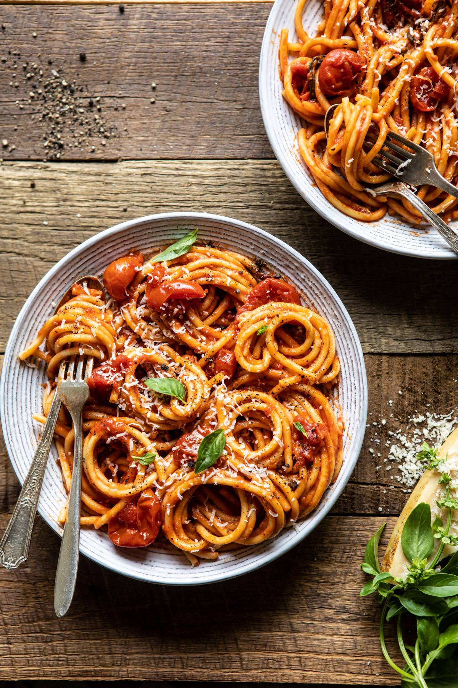

Buccatini all'Amatriciana

Bucatini is my fiancee's favorite pasta dish. It is a two part recipe consisting of using hollow spaghetti
noodles called Bucatini, as well as creating a spicy red sauce using tomatoes, red pepper flakes, and pork
jowl called, "Guanciale." It is the first dish of my Italian themed recipe page.
Ingredients Required
- Olive Oil
- Thinly sliced Guanciale
- Crushed Red Pepper Flakes
- Ground Black Pepper
- Minced Onion
- Minced Garlic
- Peeled Tomatoes (Crush by Hand)
- Bucatini Pasta
- Pecorino Cheese
Cooking Instructions
- Sautee guanciale in a heavy skillet on medium heat until crispy and golden (about 4 minutes).
- Add red and black pepper and stir for 10 seconds. Then add onion and garlic. Stir frequently cooking for 8 minutes (until onion softened).
- Add tomatoes, reduce heat to low, and cook until reduced (15-20 minutes).
- Boil pasta until 2 minutes before al denta, strain - saving 1 cup of pasta water.
- Add strained pasta to reduced sauce and toss to coat evenly using reserved pasta water as required to evenly coat.
- Stir in cheese and serve in warm bowls
Enjoy!